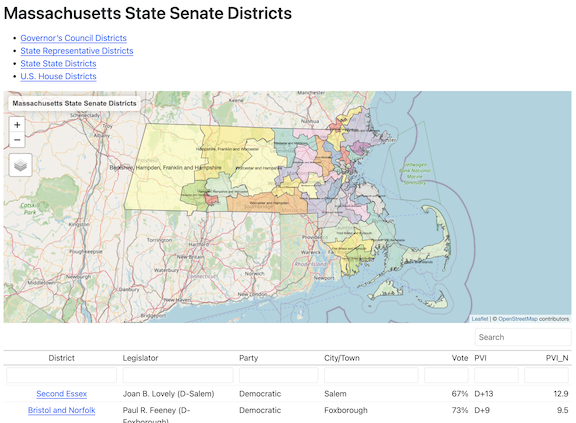
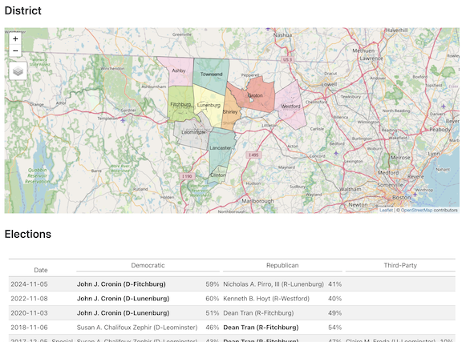

| Office | Districts |
Contested Primaries
|
|
|---|---|---|---|
| Democratic | Republican | ||
| State Representative | 34 | 31 | 4 |
| State Senate | 7 | 6 | 1 |
| Governor's Council | 4 | 4 | 0 |
| U.S. House | 6 | 6 | 0 |
mapoli
Massachusetts Legislative District Atlas with interactive maps, demographics, and election history for all 217 State Representative, State Senate, Governor’s Council, and U.S. House districts.
Massachusetts Legislative District Atlas
Interactive maps and demographic data for all 217 Massachusetts legislative districts
September Primaries
The Massachusetts state primary is September 1, 2026. Below is a count of the legislative districts with a contested primary — where more than one candidate of the same party is on the ballot.
See the September 2026 primary candidates page for the Democratic and Republican candidates in each of those districts, grouped by office, with incumbents and open seats marked.
Fun Facts
The largest and smallest State Rep districts
- While every
mapoliState Representative district has approximately the same population (currently about 44,000 people) the districts vary widely in geographic size. - The smallest State Representative district in terms of area is Ways and Means Chair Aaron Michlewitz’s Third Suffolk district coming in at a petite 1.36 square miles.
- The largest State Representative district is the Third Berkshire district represented by Leigh Davis of Great Barrington. The district covers a whopping 551 square miles and contains 18 separate municipalities.
Statewide District Overviews and Comparisons
The district atlas contains statewide maps for each legislative office with district-to-district comparison tables on political and demographic data.

Per-District Map, Demographics, and Election Information
There is also a separate page for each of the 160 State Representative, 40 State Senate, 9 U.S. House, and 8 Governor’s Council districts with demographic details and electon results back to 1990.

Full Legislative District List
The full list of 160 State Representative, 40 State Senate, 8 Governor’s Council, 9 U.S. House districts.